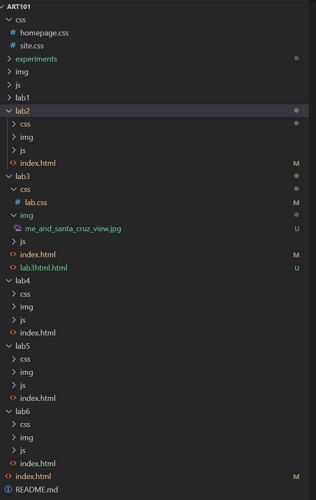
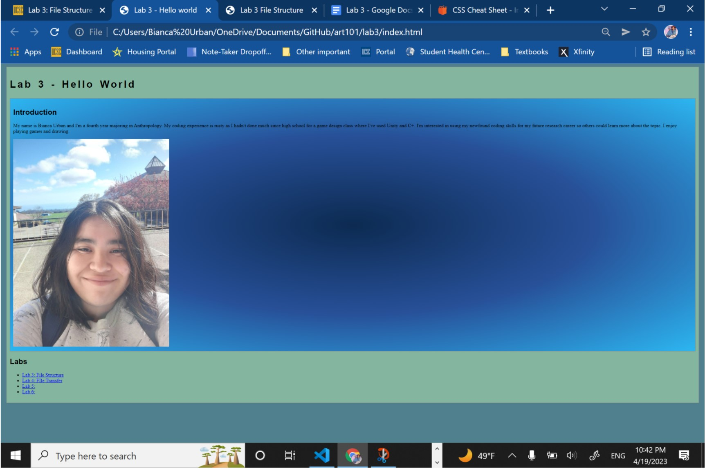
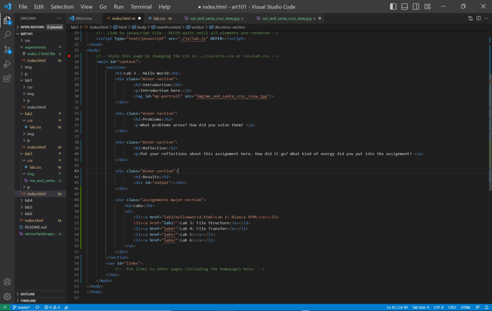

Lab 3 File Structures
Challenge
Linking two or more html together, so in this case we are connecting to our image of this lab onto our main one.
Problems
The only minor problem that I've faced was fixing the size of my profile image.
Reflection
After discussing it with my partner, we were able to fix that problem after comparing it and checking whether anything was wrong. Then we later tried out a gradient effect for the background color to stand out more. We put in alot of effort as we make sure that we're both on the same pace.
Results
This is our final product with a whole new look. YAY!
This is the File Structure
Main Browser
HTML Code
